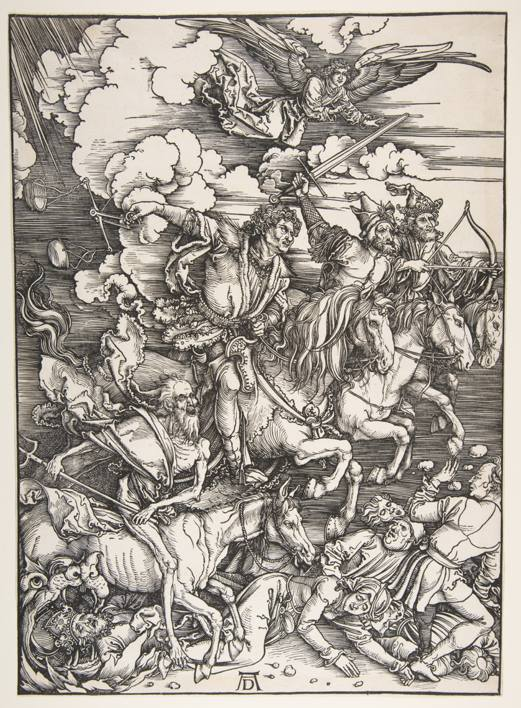

Biography
Dürer revolutionized printmaking, elevating it to the level of an independent art form. He expanded its tonal and dramatic range, and provided the imagery with a new conceptual foundation.
A supremely gifted and versatile German artist of the Renaissance period, Albrecht Dürer (1471-1528) was born in the Franconian city of Nuremberg, one of the strongest artistic and commercial centers in Europe during the fifteenth and sixteenth centuries. He was a brilliant painter, draftsman, and writer, though his first and probably greatest artistic impact was in the medium of printmaking.
Dürer apprenticed with his father, who was a goldsmith, and with the local painter Michael Wolgemut, whose workshop produced woodcut illustrations for major books and publications. An admirer of his compatriot Martin Schongauer, Dürer revolutionized printmaking, elevating it to the level of an independent art form.
He expanded its tonal and dramatic range, and provided the imagery with a new conceptual foundation. By the age of thirty, Dürer had completed or begun three of his most famous series of woodcuts on religious subjects: The Apocalypse (1498), the Large Woodcut Passion cycle (ca. 1497-1500), and the Life of the Virgin (begun 1500).
He went on to produce independent prints, such as the engraving Adam and Eve (1504) and small, self-contained groups of images, such as the so-called Meisterstiche (master engravings) featuring Knight, Death, and the Devil (1513), Saint Jerome in His Study (1514), and Melencolia I (1514), which were intended more for connoisseurs and collectors than for popular devotion. Their technical virtuosity, intellectual scope, and psychological depth were unmatched by earlier printed work.
More than any other northern European artist, Dürer was engaged by the artistic practices and theoretical interests of Italy. He visited the country twice, from 1494 to 1495 and again from 1505 to 1507, absorbing firsthand some of the great works of the Italian Renaissance, as well as the classical heritage and theoretical writings of the region.The influence of Venetian color and design can be seen in the Feast of the Rose Garlands altarpiece (1506; Národní Galerie, Prague), commissioned from Dürer by a German colony of merchants living in Venice.
Dürer developed a new interest in the human form, as demonstrated by his nude and antique studies. Italian theoretical pursuits also resonated deeply with the artist.
He wrote Four Books of Human Proportion (Vier Bücher von menschlichen Proportion), only the first of which was published during his lifetime (1528), as well as an introductory manual of geometric theory for students (Underweysung der Messung, 1525), which includes the first scientific treatment of perspective by a northern European artist.
Dürer`s talent, ambition, and sharp, wide-ranging intellect earned him the attention and friendship of some of the most prominent figures in German society. He became official court artist to Holy Roman Emperors Maximilian I and his successor Charles V, for whom Dürer designed and helped execute a range of artistic projects.(...)
The artist also cast a bold light on his own image through a number of striking self-portraits—drawn, painted, and printed. They reveal an increasingly successful and self-assured master, eager to assert his creative genius and inherent nobility, while still marked by a clear-eyed, often foreboding outlook. They provide us with the cumulative portrait of an extraordinary Northern European artist whose epitaph proclaimed: “Whatever was mortal in Albrecht Dürer lies beneath this mound.”
